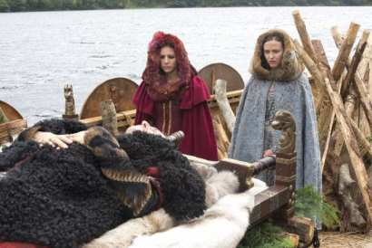
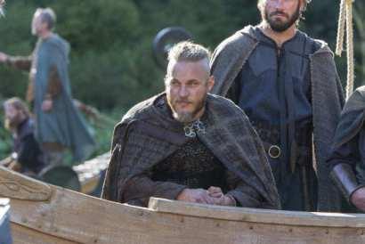
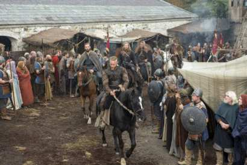

- Оригинальное название: Vikings
- Страна: Ирландия, Канада
- Год: 2013
- Жанр: Драма, Криминал
- Режиссер: Киаран Доннелли, Кен Джиротти, Йохан Ренк
- Продолжительность: 45 минут
Кадры из сериала:



Описание:
Сериал расскажет нам историю об отряде викингов самого Регнара, который когда держал всех в страхе. Ходят слухи, что он настоящий потом Одина - правителя всех войнов. Викинги очень смелые и сильные войны, о их сражениях слагались легенды. Эти бесстрашные войны рубили своих врагов и никогда не отступали назад, лучшее, что может случится в бою - это смерть. Ведь после ее их души попадали в Вальхаллу и пировали там отведенное им время. Сам Регнар очень силен в рукопашном бою, он убивал своих противников одним ударом. Он сосредоточил всю власть в своих руках и подчинял себе каждого, кто встанет у него на пути, многие люди приписывали его к богам и нечистым силам. Но с каждым годом завистников становилось все больше и больше, и однажды Регнара убили ударом в спину. Жители вздохнули с облегчением и зажили обычной жизнью, но даже не думали, что этот воин может возвратится в наш мир, чтобы покорить оставшиеся земли…